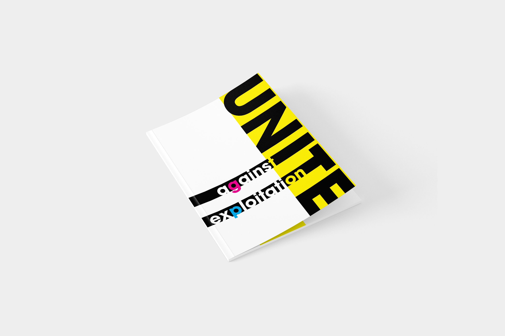
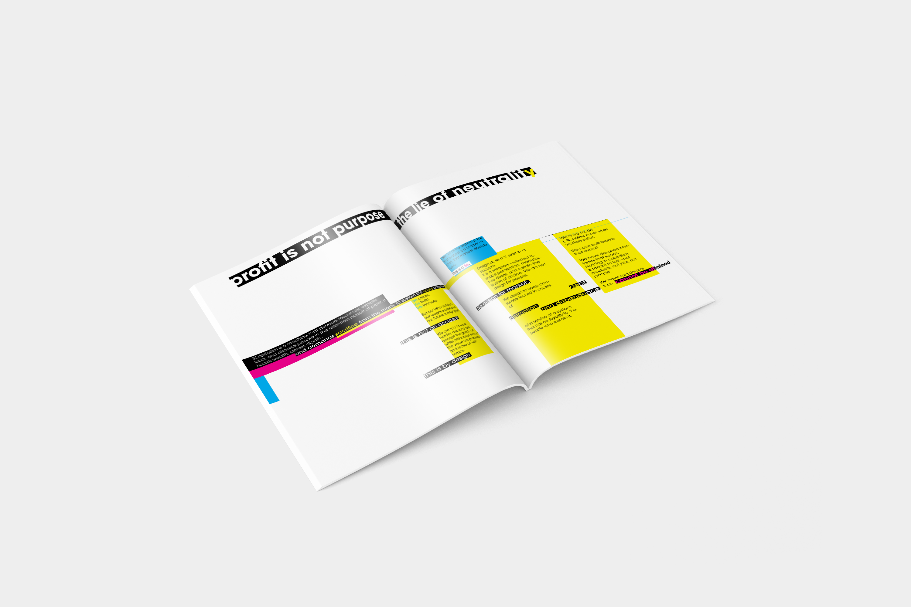
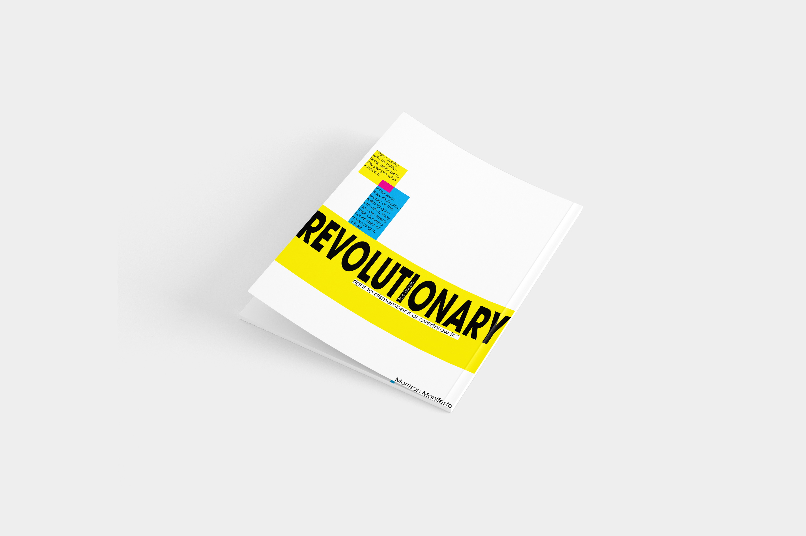

Design Manifesto Booklet
A designed manifesto booklet, cover to cover: front and back covers, center spreads, and an eight-page pamphlet system built on one grid. Click any image to view it up close. The poster work from the same era has its own page.

01 / 11 · COVERS
Front Cover
Mockup of the manifesto's front cover.

02 / 11 · COVERS
Center Spread
The center pages, where the layout opens up across the full spread.

03 / 11 · COVERS
Back Cover
Mockup of the manifesto's back cover.

04 / 11 · PAMPHLET
Page 1: Opening Spread
The cover spread that introduces the pamphlet's theme and branding.

05 / 11 · PAMPHLET
Page 2: Introduction
Introduces the topics and establishes the visual style.

06 / 11 · PAMPHLET
Page 3: Theming
Continuing the theme on the same grid.

07 / 11 · PAMPHLET
Page 4: Alignment & Color
More work with alignment and color inside the same grid system.

08 / 11 · PAMPHLET
Page 5: Call to Action
A spread built around a call to action.

09 / 11 · PAMPHLET
Page 6: Negative Space
Color and negative space carry this composition.

10 / 11 · PAMPHLET
Page 7: Refinement
Refined spreads leading into the close of the pamphlet.

11 / 11 · PAMPHLET
Page 8: Closing Spread
The final page of the pamphlet.